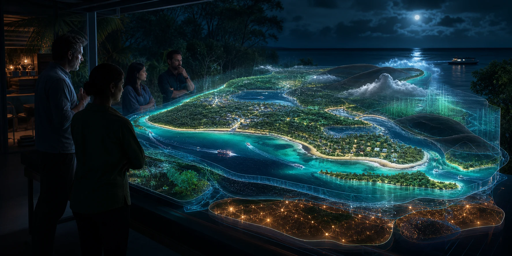

Dated, GPS-rounded imagery and official project records.

Local models need a serious workbench.
Dunwich already has public place records, 360 captures, event maps, prompt builders and ambitious simulation work. The rack brings those separate sources into traceable workloads built around one question at a time.
Three kinds of source already exist.
The workbench below combines traceable evidence, structured coordination records and portable scene instructions without pretending they are the same thing.
Organisers, places, suppliers, timings and public pathways.
Explicit choices for rooms, places, bioregions and simulations.
Choose the question. Trace the whole job.
Every selection exposes the source, rack work, output, review record and present project status.
Explore ferry gateway choices through traceable captures.
Source33 GPS-rounded 360 points and official project records
→Rack workAlign imagery, compare options and render walkthroughs
→OutputReviewable views with date, precision and source attached
- Local project
- Dunwich (Gumpi) Ferry Terminal Open Data Lab
- Review focus
- Source quality, missing views, public interpretation and changed conditions
- Next compute job
- Photogrammetry and LiDAR processing from stronger capture sets
Turn events and places into reusable coordination records.
SourceOrganiser records, places, suppliers and public pathways
→Rack workIndex records, test runs and assemble local notices
→OutputMaps and downloadable Markdown with provenance intact
- Local project
- Quandamooka Country Events Engine
- Review focus
- Organiser source, dates, place precision and aftercare
- Next compute job
- Local semantic search and richer event simulations
Move from a chosen place to a reviewable media world.
SourceProject media, scene choices and portable prompt packets
→Rack workEdit, transcribe, generate, render and version locally
→OutputSelected film, image, spatial scene or simulation version
- Local projects
- Screen & Media Network and Straddie Digital Twin Builders
- Review focus
- Creator terms, contributors, credits, locations and release version
- Next compute job
- High-resolution rendering and interactive scene generation
Explore how island systems shape useful node operation.
SourcePower, cooling, heat, ferry, network and weather records
→Rack workRun scenarios across demand, disruption and recovery choices
→OutputService priorities, operating envelope and recovery practice
- Local project
- Dunwich cultural compute node
- Review focus
- Measured inputs, energy budget, maintained services and people involved
- Next compute job
- A source-labelled node continuity model built from real engineering data
Next-stage prototype
View the current prototype separately
The Minjerribah Living Twin belongs in the rebuild queue.
Its substantial data and systems catalogue now needs stronger spatial geometry, architecture, compute and embedding quality before it serves this site as a working instrument.
Country exceeds every model.
Computational recordsPublic maps, node telemetry, chosen observations and project material remain distinct, sourced layers.
Living interpretationPeople connected to place interpret what a layer means, where it ends and what another view misses.
Cultural relationshipsCultural knowledge follows the people, purpose and relationships around a specific activity rather than an automatic map control.